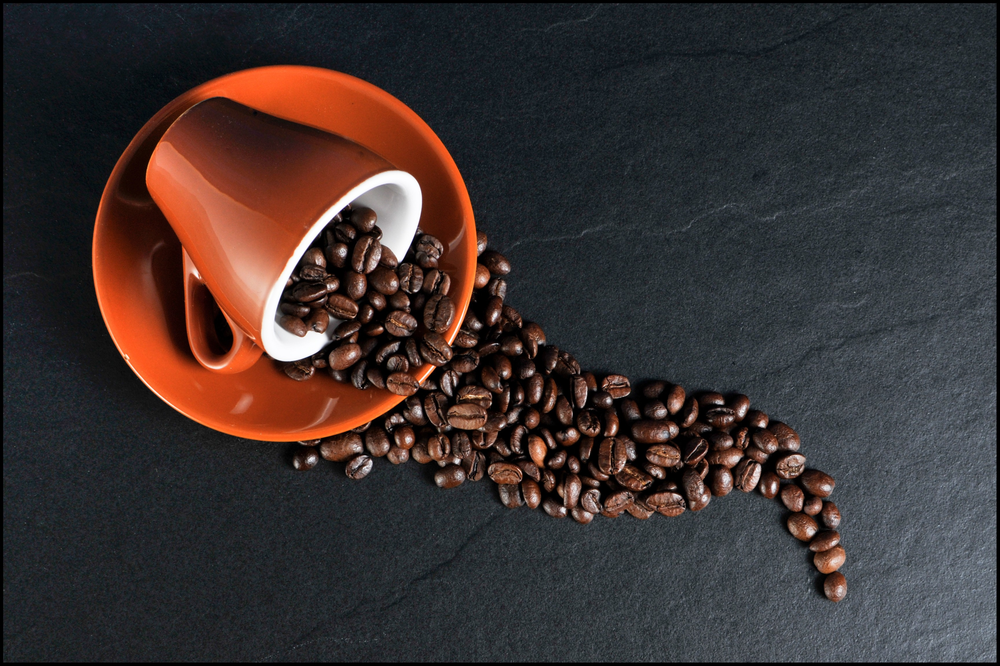
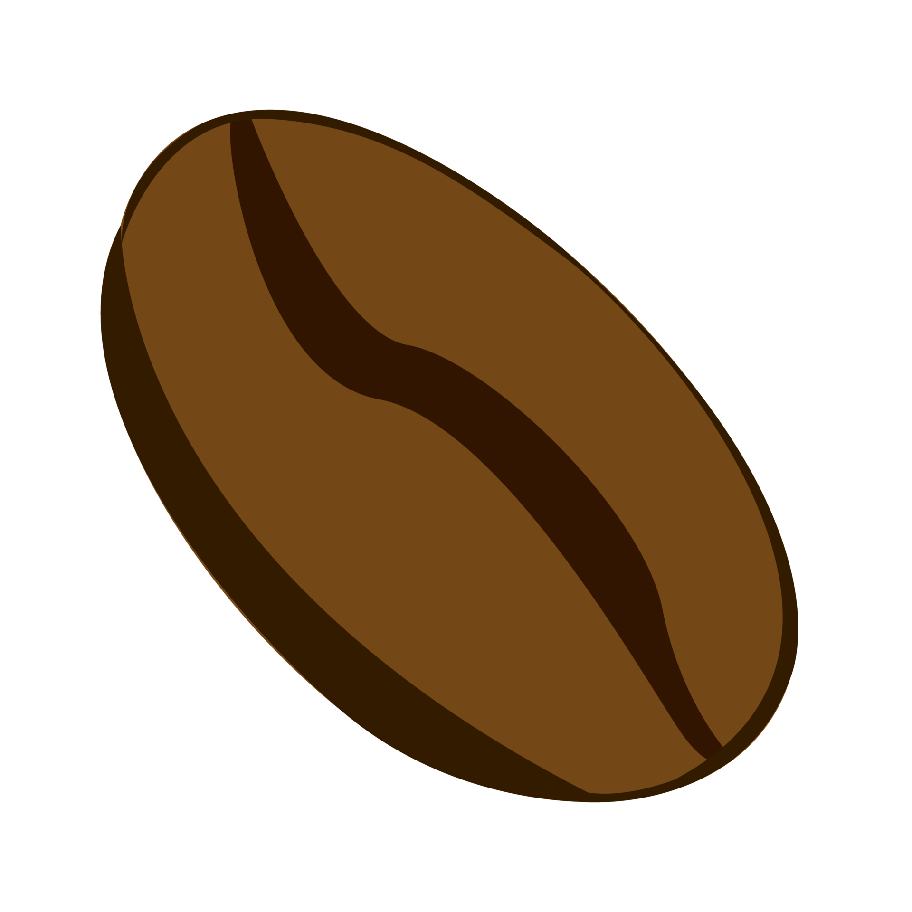

Variété de cafés
Découvrez les deux principals plantes à café vendues à travers le monde ainsi que leurs différentes saveurs et les différents lieux où elles sont cultivées.

La substance addictive la plus bénéfique de l'histoire

Découvrez les deux principals plantes à café vendues à travers le monde ainsi que leurs différentes saveurs et les différents lieux où elles sont cultivées.

Découvrez les différentes manière d'extraction du café à travers le monde. Du simple café filtre à la cafetière italienne en passant par la presse française.
Découvrez les nombreuses forme que peut prendre le café. Du simple espresso au cappuccino en passant par l'americano et le lattee machiato.